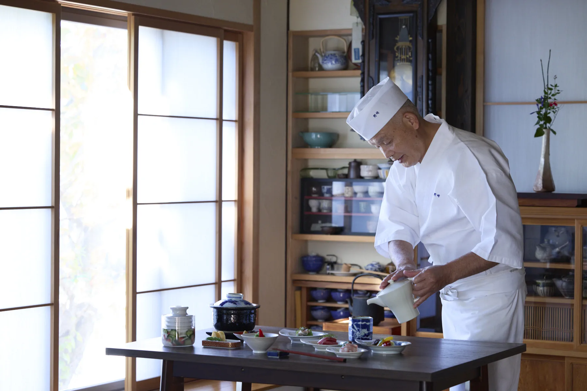
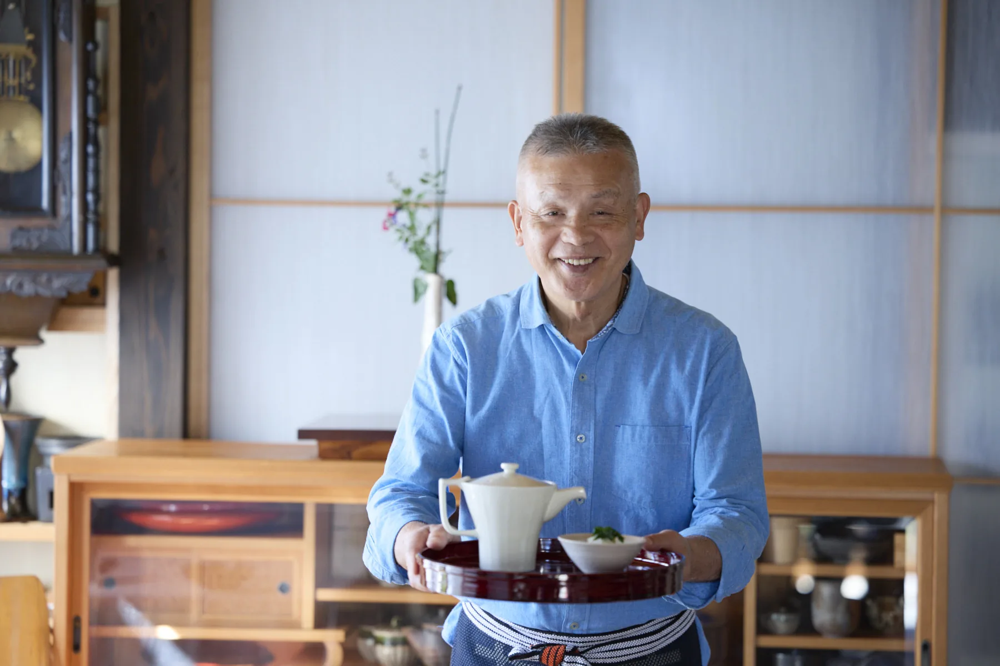
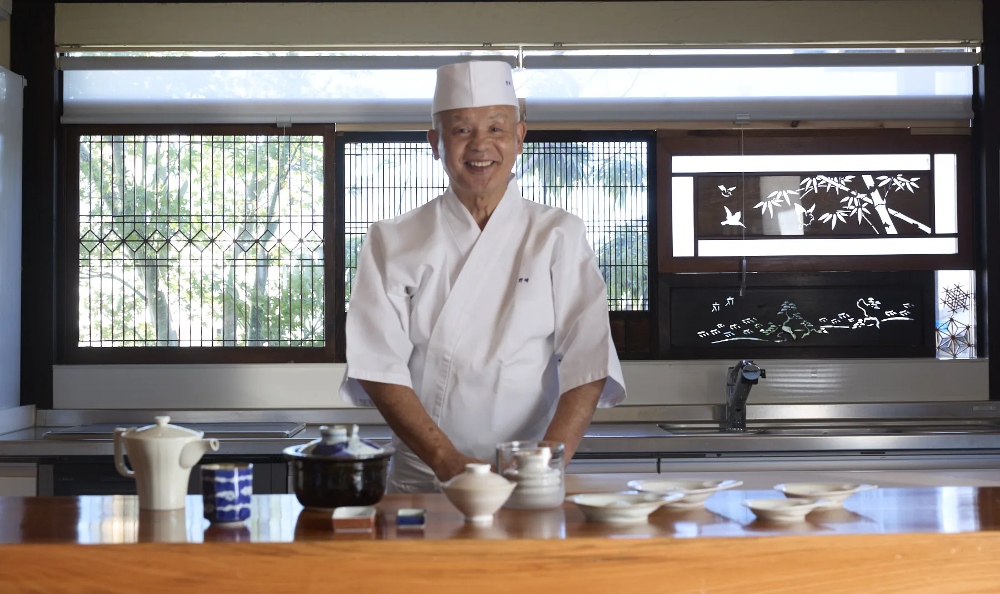
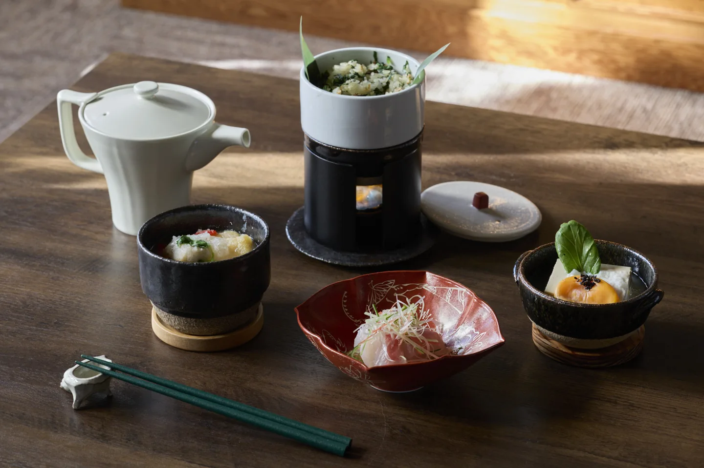
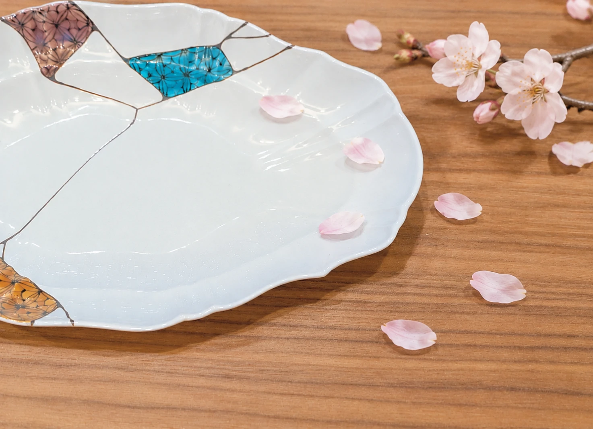
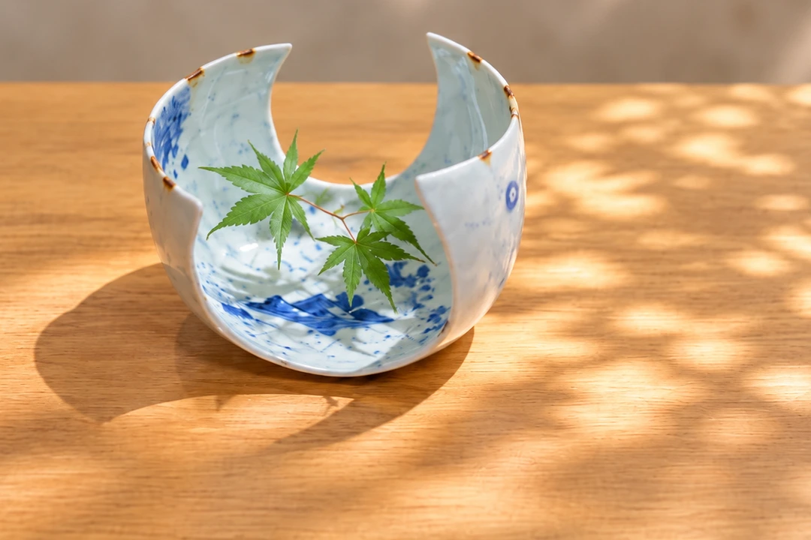
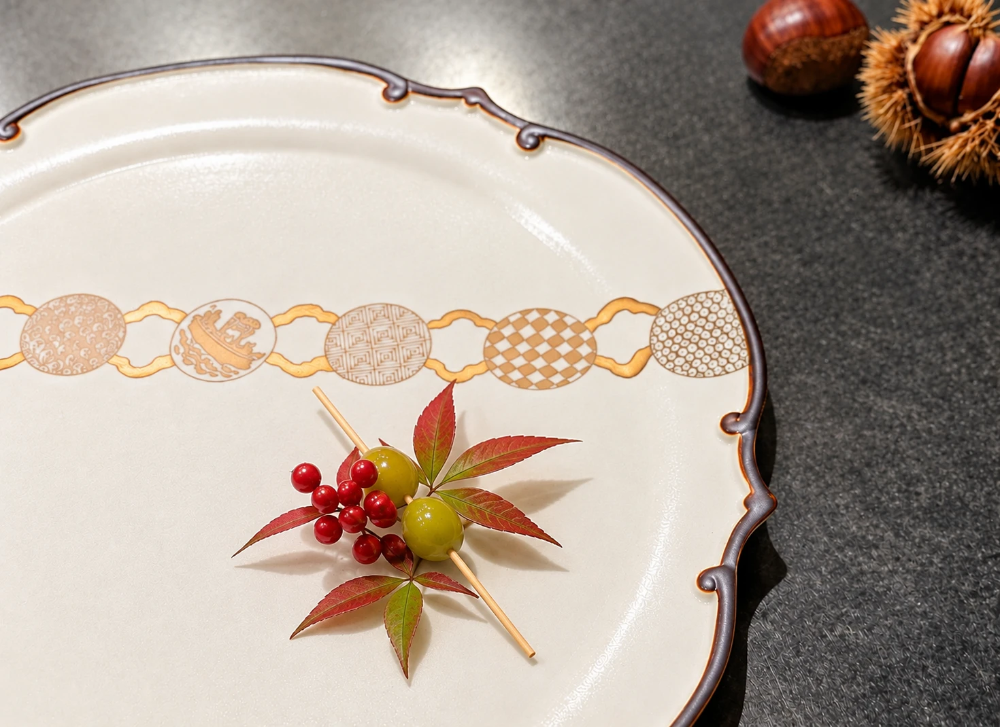

小雪11月22日から
季節は、いつもの食卓にあった
ひと皿ずつ、どうぞ
TABLE
時間を見る季づき


鍋をそのまま食卓へ。今日はなにを炊きましょうか。
炊きたてのご飯、寄せ鍋、ことこと煮魚……。
煮えるのを待つ時間まで、ごちそうの食卓。
この食卓の、うつわ其の三 なんでん鍋とのしつらえ6点セット 11,000円（税込）
CHEF
料理人 元「分とく山」総料理長 野﨑洋光

家庭料理のよさは、素材の風合いが、そのまま生きること。毎日食べても飽きないのは、白いご飯とみそ汁です。
STORY
だしポットの誕生

野﨑洋光は福泉窯から、磁器の特長の一つは熱が伝わりやすいことだと聞いていました。
「これだ」と野﨑は思いました。
約1分で、雑味のないだしがとれる「だしポット」の誕生です。
MAKERS
ともに歩んできたからこそのご提案

お互いを理解し、認め合い、仕事として誇りを持ったこの関係は、もう半世紀にも届きそうです。
GALLERY
うつわとしつらえ
有田焼で贈る、日々のうつわ
全て季づきの料理人・野﨑洋光監修・厳選のものです。
「和」「季づき」を、貴方の暮らしにご提案します。お手元の食器からでもお試しください。
-
 其の一だしポットme:とのしつらえ出汁で愉しむ季づき出汁がとれるのを待つあいだ、今日はなににしましょうか。
其の一だしポットme:とのしつらえ出汁で愉しむ季づき出汁がとれるのを待つあいだ、今日はなににしましょうか。
-
 其の二アルミコンロとのしつらえ自由を愉しむ季づき小さな火をともしたら、今夜はなにをのせましょうか。
其の二アルミコンロとのしつらえ自由を愉しむ季づき小さな火をともしたら、今夜はなにをのせましょうか。
-
其の三なんでん鍋とのしつらえ時間を見る季づき鍋をそのまま食卓へ。今日はなにを炊きましょうか。
-
 其の四彩づけ鉢とのしつらえ身体が喜ぶ季づき旬の野菜を浅く漬けたら、なにと合わせましょうか。
其の四彩づけ鉢とのしつらえ身体が喜ぶ季づき旬の野菜を浅く漬けたら、なにと合わせましょうか。
-
 其の五寿司千代口・
其の五寿司千代口・オイル千代口 とのしつらえあしらいで愉しむ季づき丘と海のある、小さな千代口。なにをのせましょうか。 -

其の六菱輪花向付とのしつらえもてなしを愉しむ季づきグラタンが焼けるのを待つあいだ、もう一品はなににしましょうか。
GIFT
贈りものとして
商品そのものの魅力を大切に、余計な飾りを加えない、シンプルなパッケージでお届けします。
商品の背景にあるストーリーや、小さなエピソードを綴ったメッセージカードを添えます。
QRコードから公式サイトへ。お贈りしたあとも、作り手の想いに触れていただけます。
各しつらえ 11,000円（税込）
ショップで購入するショップは、別のページで開きます。
NEXT SEASON
次の季節へ

春
夏
秋- 冬
暮らしの、和に気づくきっかけ